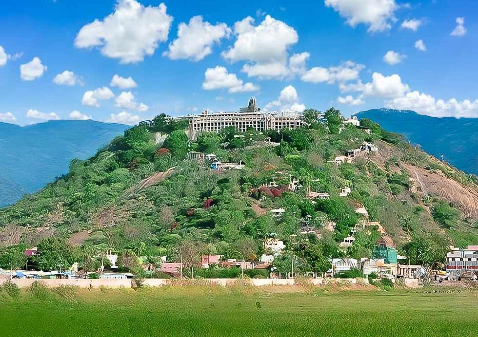
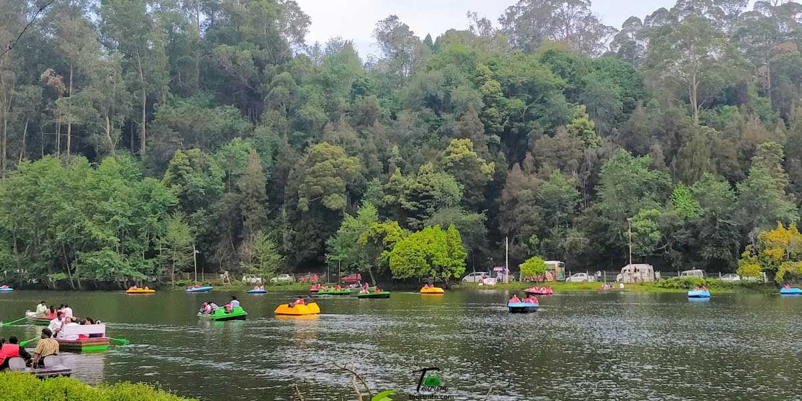

DINDIGUL
SRIVATSAN G (212223230216)
Dindigul Fort
Dindigul Fort is a historical fort situated in the town of Dindigul, Tamil Nadu.
Built by Madurai Nayak king Muthu Krishnappa Nayak in the 17th century, this fort stands atop a hill, offering panoramic views
and showcasing its military architecture and history.
Sirumalai Hills
Sirumalai is a beautiful hill area located about 25 km from Dindigul.
It is known for its lush greenery, mild climate, trekking paths, and scenic views. It's a peaceful getaway
with medicinal herbs and a calm environment.

Palani Murugan Temple
Palani Murugan Temple is one of the Arupadai Veedu (six abodes) of Lord Murugan.
Situated on a hill, it is a major pilgrimage site with rich mythology and cultural importance in Tamil Nadu.
Pilgrims climb 693 steps to reach the temple, offering prayers and performing rituals.

Kodaikanal Lake
Kodaikanal Lake is a man-made star-shaped lake located in Kodaikanal,
a famous hill station in the Dindigul district. Surrounded by lush green hills, boating and cycling around the lake
are popular activities for tourists and locals alike.